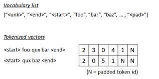

Encoder-Decoder Architecture#
(Machine Translation Example)
In the previous example, we saw the primitive text generation example with RNN, in which each word is selected only by the previous sequence of words.
But, in most cases, the word should be decided with other information (context) - i.e, conditioned text generation.
For instance, it’s in question-answering, it should generate text along with the answer (context) for the given question.
Let’s see the following architecture:
In this architecture, the word is selected by both the sequence of words and context information c.
For instance, when it generates text for movie review, the conditioned context c might be a context about this movie.
Even when it generates the text freely, it might be btter to generate a text depending on a context of genre - such as, “computer science”, “sports”, “politics”, etc -, and it will then be able to generate more appropriate text depending on the genre (theme).
The encoder-decoder framework is a trainer for text generation with sequence-to-sequence conditioned context as follows. (See the following diagram.)
üëâ For instance, when you want to translate French to English, first it generates a conditioned context c from a source sentence (which may have the sequence of length m).
üëâ This is called encoder, and the encoder summarizes a French sentence as a context vector c.
üëâ Next it will predict English sentence (which may have the sequence of length n) using the generated context c, and this is called decoder.
As you can see below, the source length (m) and target length (n) might differ in this training.
This encoder-decoder architecture can be used in forms of sequence-to-sequence problems, and is used in a lot of scenarios, such as, auto-response (smart reply or question-answering), inflection, image captioning, etc. (In image captioning task, an image input will be encoded as a vector with convolution network.)
It can also be used for generating a vector representation (in which encoder-decoder is trained to reconstruct the input sentence) or text generation, both which have been seen in the previous examples.
A variety of today’s language tasks depends on encoder-decoder architecture and attention (which will be discussed in the next example).
In this example, I’ll implement simple sequence-to-sequence trainer in machine translation task.
For the purpose of your beginng, here I only use encoder-decoder framework (without attention or other advanced architectures) and I note that the result might not be so good.
In the next tutorial, we’ll add more sophisticated architecture “attention” (also, widely used in today’s NLP) in this encoder-decoder model.
Install required packages#
!pip install torch==2.3.0 torchtext==0.18.0 --extra-index-url https://download.pytorch.org/whl/cu114
!pip install numpy nltk
Prepare data#
In this example, We’ll use Engligh-French dataset by Anki.
!wget http://www.manythings.org/anki/fra-eng.zip
--2023-02-14 01:57:45-- http://www.manythings.org/anki/fra-eng.zip
Resolving www.manythings.org (www.manythings.org)... 173.254.30.110
Connecting to www.manythings.org (www.manythings.org)|173.254.30.110|:80... connected.
HTTP request sent, awaiting response... 200 OK
Length: 6720195 (6.4M) [application/zip]
Saving to: ‘fra-eng.zip’
fra-eng.zip 100%[===================>] 6.41M 11.3MB/s in 0.6s
2023-02-14 01:57:45 (11.3 MB/s) - ‘fra-eng.zip’ saved [6720195/6720195]
!unzip fra-eng.zip -d fra-eng
Archive: fra-eng.zip
inflating: fra-eng/_about.txt
inflating: fra-eng/fra.txt
!head -n 5 fra-eng/fra.txt
Go. Va ! CC-BY 2.0 (France) Attribution: tatoeba.org #2877272 (CM) & #1158250 (Wittydev)
Go. Marche. CC-BY 2.0 (France) Attribution: tatoeba.org #2877272 (CM) & #8090732 (Micsmithel)
Go. En route ! CC-BY 2.0 (France) Attribution: tatoeba.org #2877272 (CM) & #8267435 (felix63)
Go. Bouge ! CC-BY 2.0 (France) Attribution: tatoeba.org #2877272 (CM) & #9022935 (Micsmithel)
Hi. Salut ! CC-BY 2.0 (France) Attribution: tatoeba.org #538123 (CM) & #509819 (Aiji)
!wc -l fra-eng/fra.txt
197463 fra-eng/fra.txt
from pathlib import Path
import numpy as np
pathobj = Path("fra-eng/fra.txt")
text_all = pathobj.read_text(encoding="utf-8")
lines = text_all.splitlines()
train_data = [line.split("\t") for line in lines]
train_data = np.array(train_data)[:,[1,0]]
# print first row
train_data[0]
array(['Va !', 'Go.'], dtype='<U349')
In this training set, text length in the latter part is longer (and includes multiple sentences) than the former part.
Therefore We’ll shuffle entire data.
np.random.shuffle(train_data)
train_data[0]
array(['Chantons une chanson\u202f!', 'Let us sing a song.'],
dtype='<U349')
When data consists of multiple sentences, it converts to a single sentence.
import nltk
import nltk.data
nltk.download("punkt")
tokenizer_en = nltk.data.load("tokenizers/punkt/english.pickle")
tokenizer_fr = nltk.data.load("tokenizers/punkt/french.pickle")
fr_list = []
en_list = []
for x in train_data:
x1 = tokenizer_fr.tokenize(x[0])
x2 = tokenizer_en.tokenize(x[1])
if len(x1) == len(x2):
fr_list += x1
en_list += x2
train_data = np.column_stack((fr_list, en_list))
[nltk_data] Downloading package punkt to /home/tsmatsuz/nltk_data...
[nltk_data] Package punkt is already up-to-date!
To get the better performance (accuracy), we can standarize the input text as follows.
Make all words to lowercase in order to reduce words
Make “-” (hyphen) to space
Remove all punctuation except “ ’ “ (e.g, Ken’s bag, ces’t, …)
import string
train_data = np.char.lower(train_data)
train_data = np.char.replace(train_data, "-", " ")
for x in string.punctuation.replace("'", ""):
train_data = np.char.replace(train_data, x, "")
for x in "«»":
train_data = np.char.replace(train_data, x, "")
train_data = np.char.strip(train_data)
# print first row
train_data[0]
array(['chantons une chanson', 'let us sing a song'], dtype='<U250')
Add <start> and <end> tokens in string.
train_data = np.array([[" ".join(["<start>", x, "<end>"]), " ".join(["<start>", y, "<end>"])] for x, y in train_data])
# print first row
train_data[0]
array(['<start> chantons une chanson <end>',
'<start> let us sing a song <end>'], dtype='<U264')
Generate sequence inputs#
We will generate the sequence of word’s indices (i.e, tokenize) from text.

First we create a list of vocabulary (vocab) for both source text (French) and target text (English) respectively.
from torchtext.data.utils import get_tokenizer
from torchtext.vocab import build_vocab_from_iterator
max_word = 10000
# create space-split tokenizer
tokenizer = get_tokenizer(None)
# define tokenization function
def yield_tokens(data):
for text in data:
tokens = tokenizer(text)
yield tokens
# build vocabulary list for French
vocab_fr = build_vocab_from_iterator(
yield_tokens(train_data[:,0]),
specials=["<unk>"],
max_tokens=max_word,
)
vocab_fr.set_default_index(vocab_fr["<unk>"])
# build vocabulary list for English
vocab_en = build_vocab_from_iterator(
yield_tokens(train_data[:,1]),
specials=["<unk>"],
max_tokens=max_word,
)
vocab_en.set_default_index(vocab_en["<unk>"])
The generated token index is 0, 1, ... , vocab_size - 1.
Now we’ll set vocab_size as a token id in padded positions for both French and English respctively.
pad_index_fr = vocab_fr.__len__()
vocab_fr.append_token("<pad>")
pad_index_en = vocab_en.__len__()
vocab_en.append_token("<pad>")
Get list for both index-to-word and word-to-index.
itos_fr = vocab_fr.get_itos()
stoi_fr = vocab_fr.get_stoi()
itos_en = vocab_en.get_itos()
stoi_en = vocab_en.get_stoi()
# test
print("The number of token index in French (source) is {}.".format(vocab_fr.__len__()))
print("The padded index in French (source) is {}.".format(stoi_fr["<pad>"]))
print("The number of token index in English (target) is {}.".format(vocab_en.__len__()))
print("The padded index in English (target) is {}.".format(stoi_en["<pad>"]))
The number of token index in French (source) is 10001.
The padded index in French (source) is 10000.
The number of token index in English (target) is 10001.
The padded index in English (target) is 10000.
Now we build a collator function, which is used for pre-processing in data loader.
In this collator,
üëâ First we create a list of word‚Äôs indices for source (French) and target (English) respectively as follows.
<start> this is pen <end> –> [2, 7, 5, 14, 1]
üëâ For target (English) sequence, we separate into features (x) and labels (y).
In this task, we predict the next word in target (English) sequence using the current word’s sequence (English) and the encoded context of source (French).
üëâ We then separate target sequence into the sequence iteself (x) and the following label (y).
before :
[2, 7, 5, 14, 1]
after :
x : [2, 7, 5, 14, 1]
y : [7, 5, 14, 1, -100]
Note : Here havewe set -100 as an unknown label id, because PyTorch cross-entropy function torch.nn.functional.cross_entropy()) has a property
ignore_indexwhich default value is -100.
üëâ Finally we pad the inputs (for both source and target) as follows.
The padded index in features is pad_index and the padded index in label is -100. (See above note.)
x : [2, 7, 5, 14, 1, N, ... , N]
y : [7, 5, 14, 1, -100, -100, ... , -100]
import torch
from torch.utils.data import DataLoader
seq_len_fr = 45
seq_len_en = 38
device = torch.device("cuda" if torch.cuda.is_available() else "cpu")
def collate_batch(batch):
label_list, feature_source_list, feature_target_list = [], [], []
for text_fr, text_en in batch:
# (1) tokenize to a list of word's indices
tokens_fr = vocab_fr(tokenizer(text_fr))
tokens_en = vocab_en(tokenizer(text_en))
# (2) separate into features and labels in target tokens (English)
y = tokens_en[1:]
y.append(-100)
# (3) limit length to seq_len and pad sequence
y = y[:seq_len_en]
tokens_fr = tokens_fr[:seq_len_fr]
tokens_en = tokens_en[:seq_len_en]
y += [-100] * (seq_len_en - len(y))
tokens_fr += [pad_index_fr] * (seq_len_fr - len(tokens_fr))
tokens_en += [pad_index_en] * (seq_len_en - len(tokens_en))
# add to list
label_list.append(y)
feature_source_list.append(tokens_fr)
feature_target_list.append(tokens_en)
# convert to tensor
label_list = torch.tensor(label_list, dtype=torch.int64).to(device)
feature_source_list = torch.tensor(feature_source_list, dtype=torch.int64).to(device)
feature_target_list = torch.tensor(feature_target_list, dtype=torch.int64).to(device)
return label_list, feature_source_list, feature_target_list
dataloader = DataLoader(
list(zip(train_data[:,0], train_data[:,1])),
batch_size=64,
shuffle=True,
collate_fn=collate_batch
)
# test
for labels, sources, targets in dataloader:
break
print("label shape in batch : {}".format(labels.size()))
print("feature source shape in batch : {}".format(sources.size()))
print("feature target shape in batch : {}".format(targets.size()))
print("***** label sample *****")
print(labels[0])
print("***** features (source) sample *****")
print(sources[0])
print("***** features (target) sample *****")
print(targets[0])
label shape in batch : torch.Size([64, 38])
feature source shape in batch : torch.Size([64, 45])
feature target shape in batch : torch.Size([64, 38])
***** label sample *****
tensor([ 84, 95, 583, 1489, 343, 159, 1, -100, -100, -100, -100, -100,
-100, -100, -100, -100, -100, -100, -100, -100, -100, -100, -100, -100,
-100, -100, -100, -100, -100, -100, -100, -100, -100, -100, -100, -100,
-100, -100], device='cuda:0')
***** features (source) sample *****
tensor([ 2, 3, 76, 77, 4616, 11, 437, 3470, 563, 1,
10000, 10000, 10000, 10000, 10000, 10000, 10000, 10000, 10000, 10000,
10000, 10000, 10000, 10000, 10000, 10000, 10000, 10000, 10000, 10000,
10000, 10000, 10000, 10000, 10000, 10000, 10000, 10000, 10000, 10000,
10000, 10000, 10000, 10000, 10000], device='cuda:0')
***** features (target) sample *****
tensor([ 2, 84, 95, 583, 1489, 343, 159, 1, 10000, 10000,
10000, 10000, 10000, 10000, 10000, 10000, 10000, 10000, 10000, 10000,
10000, 10000, 10000, 10000, 10000, 10000, 10000, 10000, 10000, 10000,
10000, 10000, 10000, 10000, 10000, 10000, 10000, 10000],
device='cuda:0')
Build Encoder-Decoder Network#
Now we build a model with encoder-decoder architecture. The brief outline of this architecture is as follows. :
The context is generated by using the entire source sequence (French) in encoder.
The encoder’s context is then concatenated with the words of current target’s sequence (English) and passed into RNN layer in decoder.
RNN outputs (not only final output, but in all units in sequence) is passed into linear (FCNet) layer and generate the logits of next words.
Calculate loss between predicted next words and the true values of next words, and then proceed to optimize neural networks.
First, we build encoder model.
In this example, only the last output of RNN (GRU) is required in encoder model, because we need a single context in each sequence.
import torch
import torch.nn as nn
embedding_dim = 256
rnn_units = 1024
class Encoder(nn.Module):
def __init__(self, vocab_size, embedding_dim, rnn_units, padding_idx):
super().__init__()
self.padding_idx = padding_idx
self.embedding = nn.Embedding(
vocab_size,
embedding_dim,
padding_idx=padding_idx,
)
self.rnn = nn.GRU(
input_size=embedding_dim,
hidden_size=rnn_units,
num_layers=1,
batch_first=True,
)
def forward(self, inputs):
# embedding
# --> (batch_size, seq_len, embedding_dim)
outs = self.embedding(inputs)
# build "lengths" property to pack inputs (see previous example)
lengths = (inputs != self.padding_idx).int().sum(dim=1, keepdim=False)
# pack inputs for RNN (see previous example)
packed_inputs = torch.nn.utils.rnn.pack_padded_sequence(
outs,
lengths.cpu(),
batch_first=True,
enforce_sorted=False,
)
# apply RNN
_, final_state = self.rnn(packed_inputs)
# (1, batch_size, rnn_units) --> (batch_size, rnn_units)
final_state = final_state.squeeze(dim=0)
# return results
return final_state
enc_model = Encoder(
vocab_size=vocab_fr.__len__(),
embedding_dim=embedding_dim,
rnn_units=rnn_units,
padding_idx=pad_index_fr).to(device)
Next we build decoder model.
The decoder receives encoder’s final output, and this is used in all units in target’s sequence.
In each unit, encoder’s final output (context) is concatenated with word’s embedding vectors in current target (English).
The concatenated vector is then passed into RNN. The output of RNN is then passed into linear (fully-connected network, FCNet) and it generates the next word’s logits.
Same as previous examples, RNN inputs are packed, because appropriate steps in each sequence should be processed.
Note: In encoder-decoder architecture, there exist a variation to set encoder’s final state as decoder’s initial state.
In this example, we don’t set initial state (i.e, set zero state as initial state) in decoder.
import torch
import torch.nn as nn
class Decoder(nn.Module):
def __init__(self, vocab_size, seq_len, embedding_dim, rnn_units, padding_idx, hidden_dim=1024):
super().__init__()
self.seq_len = seq_len
self.padding_idx = padding_idx
self.embedding = nn.Embedding(
vocab_size,
embedding_dim,
padding_idx=padding_idx,
)
self.rnn = nn.GRU(
input_size=embedding_dim + rnn_units,
hidden_size=rnn_units,
num_layers=1,
batch_first=True,
)
self.hidden = nn.Linear(rnn_units, hidden_dim)
self.classify = nn.Linear(hidden_dim, vocab_size)
self.relu = nn.ReLU()
def forward(self, inputs, enc_outputs, states=None, return_final_state=False):
# embedding
# --> (batch_size, seq_len, embedding_dim)
outs = self.embedding(inputs)
# convert the shape of enc_outputs :
# (batch_size, rnn_units) --> (batch_size, 1, rnn_units)
enc_outputs = enc_outputs.unsqueeze(dim=1)
# (batch_size, rnn_units) --> (batch_size, seq_len, rnn_units)
enc_outputs = enc_outputs.expand(-1, self.seq_len, -1)
# concat encoder's output
# --> (batch_size, seq_len, embedding_dim + rnn_units)
outs = torch.concat((outs, enc_outputs), dim=-1)
# build "lengths" property to pack inputs (see above)
lengths = (inputs != self.padding_idx).int().sum(dim=1, keepdim=False)
# pack inputs for RNN
packed_inputs = torch.nn.utils.rnn.pack_padded_sequence(
outs,
lengths.cpu(),
batch_first=True,
enforce_sorted=False,
)
# apply RNN
if states is None:
packed_outs, final_state = self.rnn(packed_inputs)
else:
packed_outs, final_state = self.rnn(packed_inputs, states)
# unpack results
# --> (batch_size, seq_len, rnn_units)
outs, _ = torch.nn.utils.rnn.pad_packed_sequence(
packed_outs,
batch_first=True,
padding_value=0.0,
total_length=self.seq_len,
)
# apply feed-forward (hidden)
# --> (batch_size, seq_len, hidden_dim)
outs = self.hidden(outs)
outs = self.relu(outs)
# apply feed-forward to classify
# --> (batch_size, seq_len, vocab_size)
logits = self.classify(outs)
# return results
if return_final_state:
return logits, final_state # This is used in prediction
else:
return logits # This is used in training
dec_model = Decoder(
vocab_size=vocab_en.__len__(),
seq_len=seq_len_en,
embedding_dim=embedding_dim,
rnn_units=rnn_units,
padding_idx=pad_index_en).to(device)
Train#
Now we put it all together and run training.
The loss on label id=-100 is ignored in cross_entropy() function. The padded position and the end of sequence will then be ignored in optimization.
Note : Because the default value of ignore_index property in cross_entropy() function is -100. (You can change this default value.)
from torch.nn import functional as F
num_epochs = 5
all_params = list(enc_model.parameters()) + list(dec_model.parameters())
optimizer = torch.optim.AdamW(all_params, lr=0.001)
for epoch in range(num_epochs):
for labels, sources, targets in dataloader:
# optimize
optimizer.zero_grad()
enc_outputs = enc_model(sources)
logits = dec_model(targets, enc_outputs)
loss = F.cross_entropy(logits.transpose(1,2), labels)
loss.backward()
optimizer.step()
# calculate accuracy
pred_labels = logits.argmax(dim=2)
num_correct = (pred_labels == labels).float().sum()
num_total = (labels != -100).float().sum()
accuracy = num_correct / num_total
print("Epoch {} - loss: {:2.4f} - accuracy: {:2.4f}".format(epoch+1, loss.item(), accuracy), end="\r")
print("")
Epoch 1 - loss: 2.7009 - accuracy: 0.6364
Epoch 2 - loss: 1.6154 - accuracy: 0.7273
Epoch 3 - loss: 0.7325 - accuracy: 0.8125
Epoch 4 - loss: 0.1153 - accuracy: 1.0000
Epoch 5 - loss: 0.4040 - accuracy: 0.9231
Translate Text#
Now translate French text to English text with trained model. (All these sentences are not in training set.)
Here we simply translate several brief sentences, but the metrics to evaluate text-generation task will not be so easy. (Because simply checking an exact match to a reference text is not optimal.)
To evaluate the trained model, use some common metrics available in text generation, such as, BLEU or ROUGE.
Note : Here we use greedy search and this will sometimes lead to wrong sequence.
import numpy as np
end_index_en = stoi_en["<end>"]
max_output = 128
def translate(sentence):
# preprocess inputs
text_fr = sentence
text_fr = text_fr.lower()
text_fr = " ".join(["<start>", text_fr, "<end>"])
text_en = "<start>"
_, tokens_fr, tokens_en = collate_batch(list(zip([text_fr], [text_en])))
# process encoder
enc_outputs = enc_model(tokens_fr)
# process decoder
states = None
for loop in range(max_output):
logits, states = dec_model(
tokens_en,
enc_outputs,
states=states,
return_final_state=True)
pred_idx_en = logits[0][0].argmax()
next_word_en = itos_en[pred_idx_en]
text_en += " "
text_en += next_word_en
if pred_idx_en.item() == end_index_en:
break
_, _, tokens_en = collate_batch(list(zip(["<end>"], [next_word_en])))
return text_en
print(translate("j'aime la guitare")) # i like guitar
print(translate("il vit au japon")) # he lives in Japan
print(translate("ce stylo est utilisé par lui")) # this pen is used by him
print(translate("c'est ma chanson préférée")) # that's my favorite song
print(translate("il conduit une voiture et va à new york")) # he drives a car and goes to new york
<start> i like the guitar <end>
<start> he lives in japan <end>
<start> this book is close to him <end>
<start> this is my favorite song <end>
<start> he drives a family and he will return to a new car <end>
In this vanilla encoder-decoder architecture, the source (French) is encoded into a single context, and it will then be hard to manipulate the long context.
In the next exercise, we will refine architecture to tackle this weak points.